Menú: Dimensión - Vertical
Acceso directo: D, V
Comandos: dimver | dimvertical | dv

Descripción:
Estas herramientas se proporcionan por comodidad y se comportan básicamente como la herramienta cota lineal. La única diferencia es que no hay que introducir un ángulo.